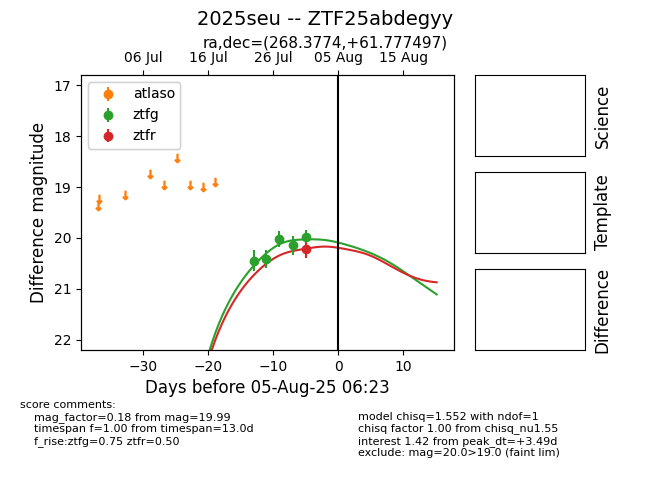

Target 2025seu at 2025-08-19 15:23, see:
FINK: fink-portal.org/ZTF25abdegyy
Lasair: lasair-ztf.lsst.ac.uk/objects/ZTF25abdegyy
ALeRCE: alerce.online/object/ZTF25abdegyy
TNS: wis-tns.org/object/2025seu
YSE: ziggy.ucolick.org/yse/transient_detail/2025seu
alt names
ZTF25abdegyy (ztf,fink)
2025seu (tns,yse)
ATLAS25jgm (atlas)
coordinates:
equatorial (ra, dec) = (268.3774,+61.77750)
galactic (l, b) = (90.8443,+30.46596)
photometry
last ztfg=19.34, ztfr=19.56
7 ztfg, 2 ztfr detections
